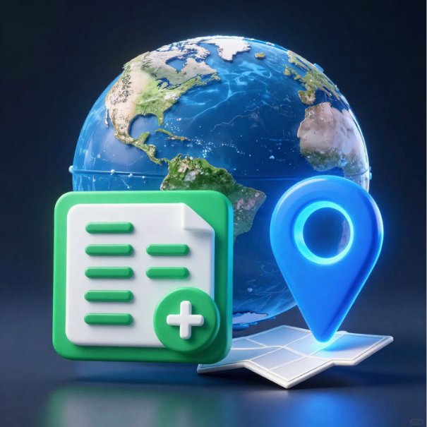
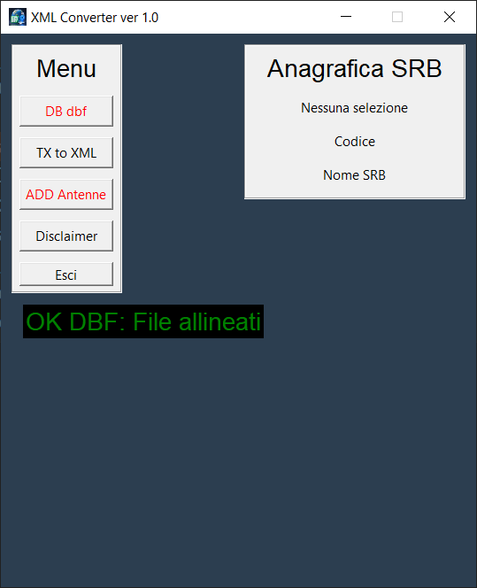

Versione v1.0.0Dal file trasmettitori al portale ARPA senza passaggi manuali.
Genera file XML conformi alle specifiche tecniche per la mappatura delle stazioni radio base. Ottimizzato per gestire posizionamenti GPS e diagrammi di irradiazione, assicurando che ogni punto di interesse sia georeferenziato con la massima fedeltà sui sistemi GIS dell'Agenzia.
